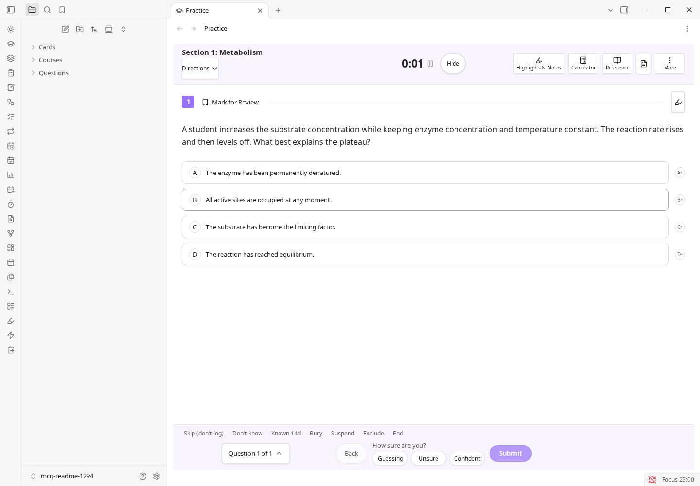
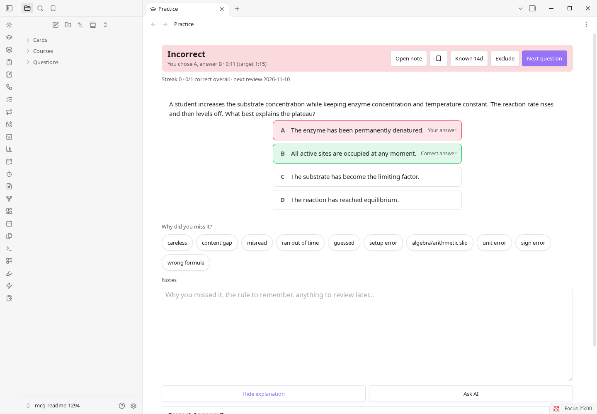
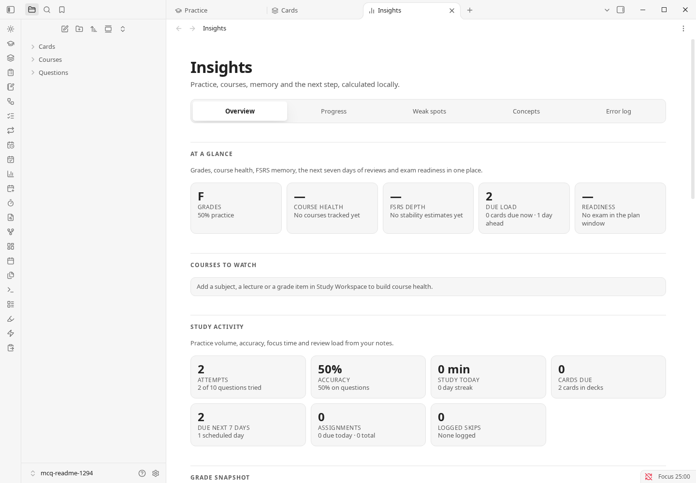
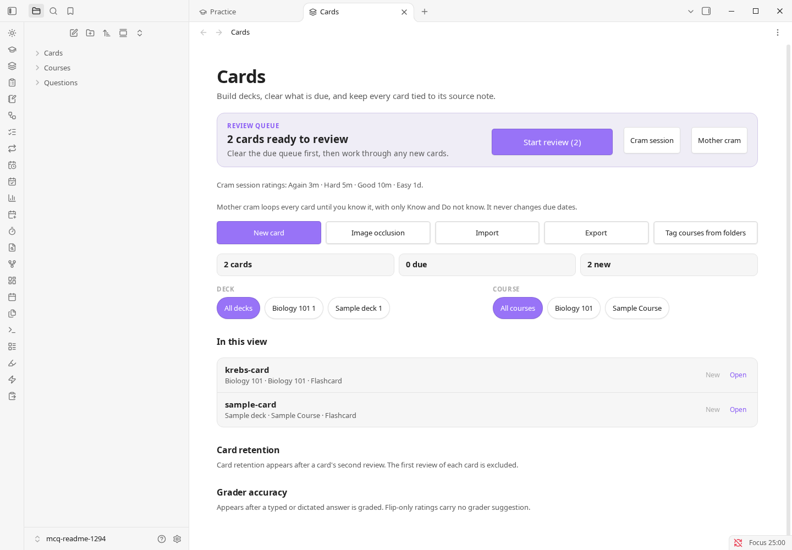

7
Question formats
Multiple choice, student-produced response, fill-in, matching, true/false, select-all and free response. Each one is an ordinary note, graded in the same Practice view.
Obsidian community plugin
MCQ Tracker is an Obsidian plugin for exam practice. Turn your notes into questions, import free-response items from a PDF, and keep every attempt, explanation and next review date on the note it came from.
For AP, university and professional exam prep. Uses the vault you already have, with AI off until you configure it.

At a glance
The README summarises the plugin in four numbers. Here is exactly what each one counts, without the abbreviations.
Multiple choice, student-produced response, fill-in, matching, true/false, select-all and free response. Each one is an ordinary note, graded in the same Practice view.
A simple interval ladder is the default for questions. FSRS and SM-2 are available for cards and whole notes. The chosen schedule and its history live in the note.
An optional workspace, not 21 separate plugins. Every tab has its own switch and its own local data. The full list is below.
No analytics, crash reporting, ads or self-updater. Network calls happen only in features you configure: AI, CouchDB sync, calendar feeds or AnkiConnect.
Practice is one note per question by default. Write it in Markdown, import a question bank, or turn a PDF into free-response items. Submit an answer and the result goes back to the same file.
Multiple choice, select-all, true/false, student-produced response, fill-in, matching and free response, with hints, cross-out, flags and per-question timing.
The correct answer, explanation, confidence, mistake tag and next review date are written to the note.
Build multi-section tests with resume, a question navigator, mark-for-review, option shuffle, a pass mark and Bluebook-style tools.

Questions, cards and whole notes share one review history. A wrong answer returns tomorrow; a right one moves along its schedule. Whole-note review docks under the note and previews the interval for each rating before you press it.
The review sidebar and due calendar read that same history. Nothing is copied into a second database.

Use cards when recall is the unit and timed tests when the exam is. Both read and write the same notes as Practice.
Flip, cloze, reversed, typed and image-occlusion cards. Decks, vocabulary, cram sessions, .apkg import and export, AnkiConnect to Anki desktop, and an AnkiWeb deck search that opens in your browser.
Timed sections, resume, a question navigator, mark for review, option shuffle, a pass mark, AP-style free response, a gradebook and a calendar.

The Study Workspace is optional. It adds local workflows for planning, reading, recall and revision. Each of the 21 tabs can be turned off, and each keeps its own local data.
All 21 tabs
Private tutor, Socratic tutor, Objective coach and Language partner roles. It answers from cited vault notes and PDF pages, proposes file changes, and waits for your approval. Off until you configure a provider.
One everyday step needs AI: turning a PDF, PowerPoint or Word file into question notes. There is no offline converter; the import uses the provider key you configure, or the OpenCode agent on desktop. Writing questions by hand, practice, review, cards, the calendar and the reference tools all work without AI.
Review state is YAML frontmatter on the note, not a row in a private database. It travels with the vault, survives a plugin reinstall and stays readable in a text editor or Dataview.
---
question_id: BIO-001
course: Biology
skill: Cells
question_type: mcq
answer: B
---MCQ Tracker is a community plugin. There is no account or sync service; install it from Obsidian or use the latest release manually. New to Obsidian? Install Obsidian and create a vault first; the Start here note teaches the rest.
In Obsidian, go to Settings → Community plugins and turn off Restricted mode if it is on.
Choose Browse, search for MCQ Tracker and open the result by Isaac Friedenson.
Click Install, then Enable. The MCQ Tracker Start here note opens with a five-minute Obsidian primer and paths for AP students, regular Obsidian users and power users. The interactive guide also offers a ready-made question you can skip.
Feedback
Two minutes, no account. Say what you study, what is missing and what broke. The form only opens when you click it.